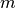
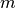

Like the Kalman Filter, the Unscented Kalman Filter is an unsupervised algorithm for tracking a single target in a continuous state space. The difference is that while the Kalman Filter restricts dynamics to affine functions, the Unscented Kalman Filter is designed to operate under arbitrary dynamics.
The advantages of the Unscented Kalman Filter implemented here are:
- Ability to handle non-affine state transition and observation functions
- Ability to handle not-quite-Gaussian noise models
- Same computational complexity as the standard Kalman Filter
The disadvantages are:
- No method for learning parameters
- Lack of theoretical guarantees on performance
- Inability to handle extremely non-Gaussian noise
Basic Usage¶
Like KalmanFilter, two methods are provided in UnscentedKalmanFilter for tracking targets: UnscentedKalmanFilter.filter() and UnscentedKalmanFilter.smooth(). At this point no algorithms have been implemented for inferring parameters, so they must be specified by hand at instantiation.
In order to apply these algorithms, one must specify a subset of the following,
Variable Name Interpretation Default f state transition function(s) state plus noise g observation function(s) state plus noise Q state transition covariance identity R observation covariance identity mu_0 initial state mean zero sigma_0 initial state covariance identity
If parameters are left unspecified, they will be replaced by their defaults. One also has the option of simply specifying n_dim_state or n_dim_obs if the size of the state or observation space cannot be inferred directly.
The state transition function and observation function have replaced the transition matrix/offset and observation matrix/offset from the original KalmanFilter, respectively. Both must take in the current state and some Gaussian-sampled noise and return the next state/current observation. For example, if noise were multiplicative instead of additive, the following would be valid:
>>> def f(current_state, transition_noise):
... return current_state * transition_noise
...
>>> def g(current_state, observation_noise):
... return current_state * observation_noise
Once defined, the UnscentedKalmanFilter can be used to extract estimated state and covariance matrices over the hidden state:
>>> from pykalman import UnscentedKalmanFilter
>>> import numpy as np
>>> def f(state, noise):
... return state + np.sin(noise)
...
>>> def g(state, noise):
... return state + np.cos(noise)
...
>>> ukf = UnscentedKalmanFilter(f, g, R=0.1)
>>> ukf.smooth([0, 1, 2])[0]
array([[-0.94034641],
[ 0.05002316],
[ 1.04502498]])
If the UnscentedKalmanFilter is instantiated with an array of functions for f or g, then the function is assumed to vary with time. Currently there is no support for time-varying covariance matrices.
Which Unscented Kalman Filter is for Me?¶
Though only UnscentedKalmanFilter was mentioned in the previous
section, there exists another class specifically designed for the case when
noise is additive, AdditiveUnscentedKalmanFilter. While more
restrictive, this class offers reduced computational complexity
( vs. math:O(T(2n+m)^3) for state space with dimensionality
 , observation space with dimensionality ) and better
numerical stability. When at all possible, the
AdditiveUnscentedKalmanFilter should be preferred to its counterpart.
, observation space with dimensionality ) and better
numerical stability. When at all possible, the
AdditiveUnscentedKalmanFilter should be preferred to its counterpart.
To reflect the restriction on how noise is integrated, the AdditiveUnscentedKalmanFilter uses state transition and observation functions with slightly different arguments:
def f(current_state):
...
def g(current_state):
...
Notice that the transition/observation noise is no longer an argument. Its effect will be taken care of at later points in the algorithm without any need for your explicit input.
Finally, users should note that the UnscentedKalmanFilter can potentially suffer from collapse of the covariance matrix to zero. Algorithmically, this means that the UnscentedKalmanFilter is one hundred percent sure of the state and that no noise is left in the system. In order to avoid this, one must ensure that even for small amounts of noise, f and g output different values for the same current state.
Choosing Parameters¶
The majority of advice on choosing parameters in Kalman Filter section apply to the Unscented Kalman Filter except that there is no method for learning parameters and the following code snippet defines the probabilistic model the Unscented Kalman Filter (approximately) solves,
from scipy.stats import norm
import numpy as np
states = np.zeros((n_timesteps, n_dim_state))
measurements = np.zeros((n_timesteps, n_dim_obs))
for t in range(n_timesteps-1):
if t == 0:
states[t] = norm.rvs(mu_0, np.sqrt(sigma_0))
measurements[t] = (
observation_function(
states[t],
norm.rvs(0, np.sqrt(R))
)
)
states[t+1] = (
transition_function(
states[t],
norm.rvs(0, np.sqrt(Q))
)
)
measurements[t+1] = (
observation_function(
states[t+1],
norm.rvs(0, np.sqrt(R))
)
)
Missing Measurements¶
The UnscentedKalmanFilter and AdditiveUnscentedKalmanFilter have the same support for missing measurements that the original KalmanFilter class supports. Usage is precisely the same.